| ・ 広告写真 (R02.03.08) | |||
新型コロナウイルス感染の拡大で、日本機械学会 関西支部第95期定時総会講演会も中止になりました。ただし、 ポスター原稿と予稿集で審査を行うことになりました。折角なのでM1M4さんが製作したホログラフィ顕微鏡のポスター用の広告写真をじっくりFの部屋で撮影です。 |
|||
|
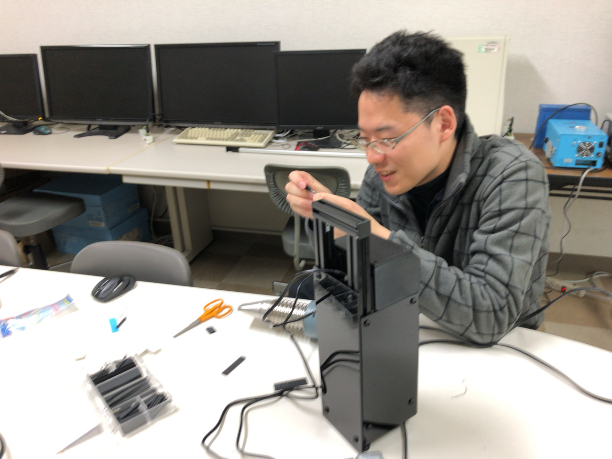
ディテールアップ中 |
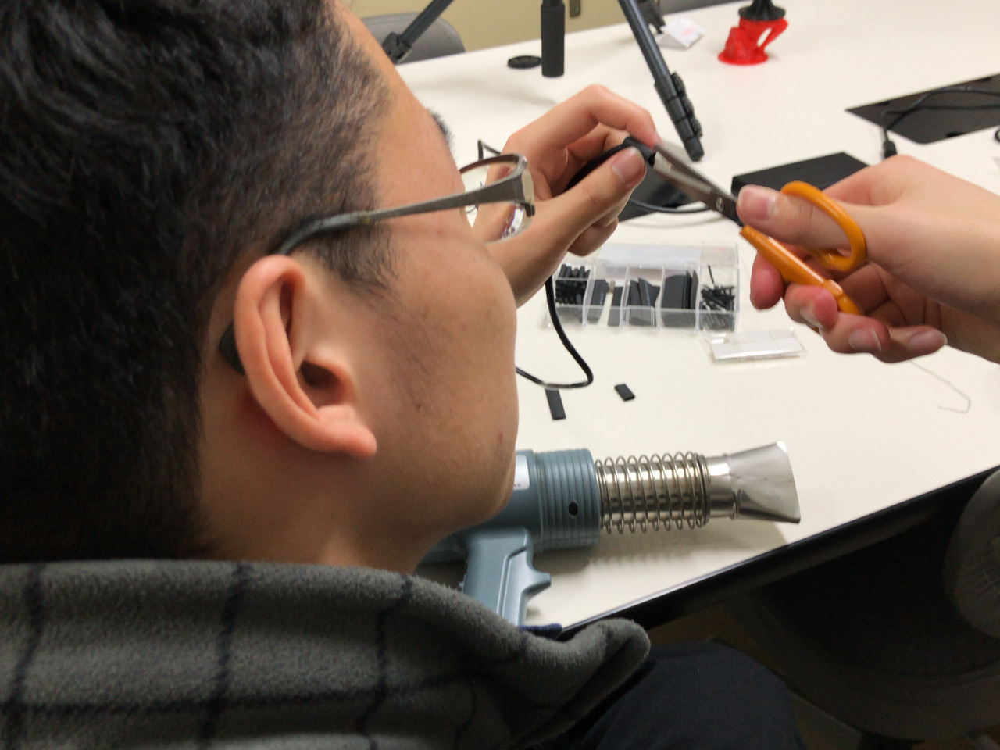
配線は美しく | ||
|
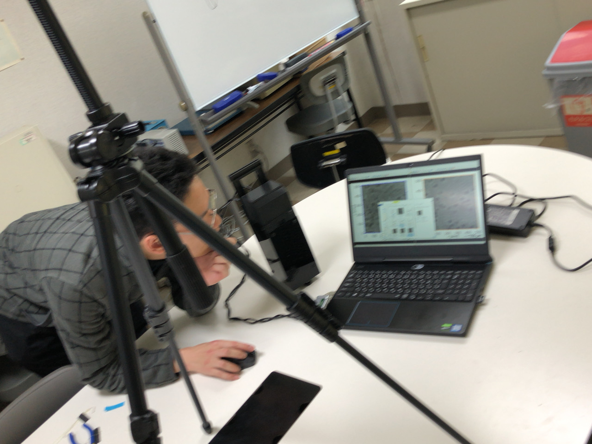
ソフト起動 |
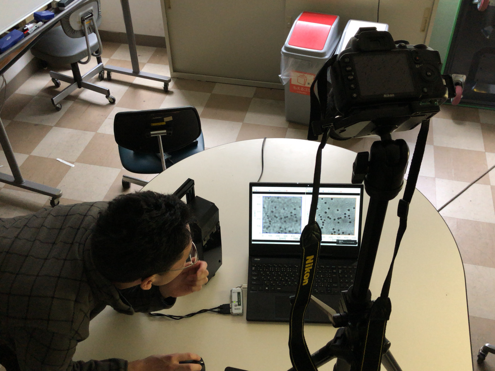
システム全体像の構図 | ||
|
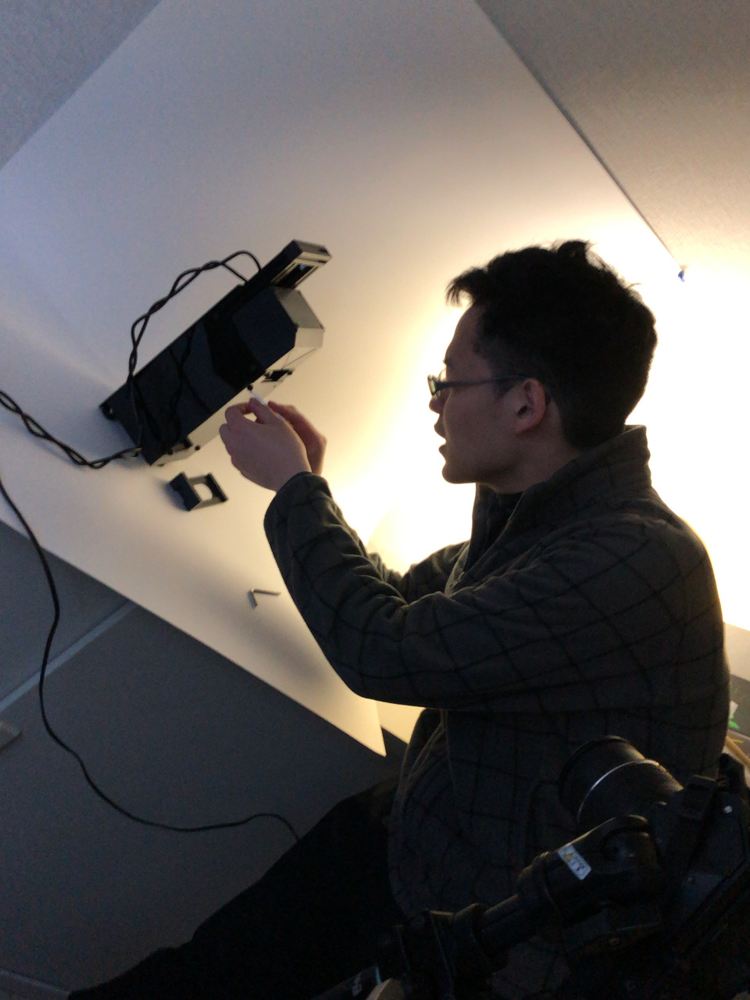
顕微鏡本体へ |
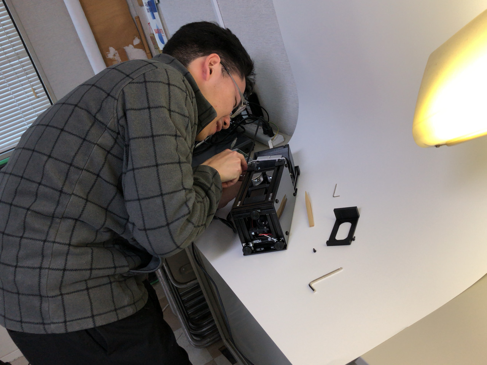
カバーなくてもいい | ||
|
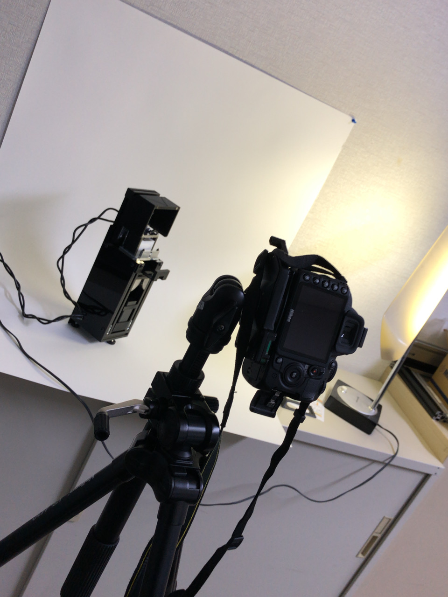
製品ぽく |
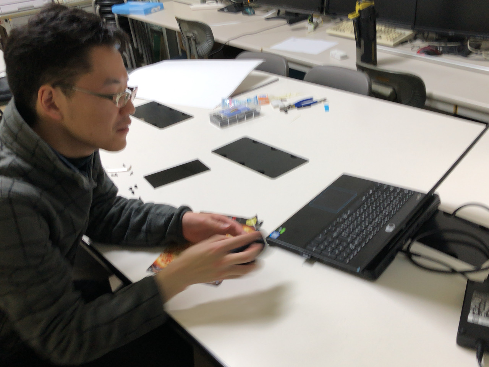
マニュアルはピンボケおおい | ||
|
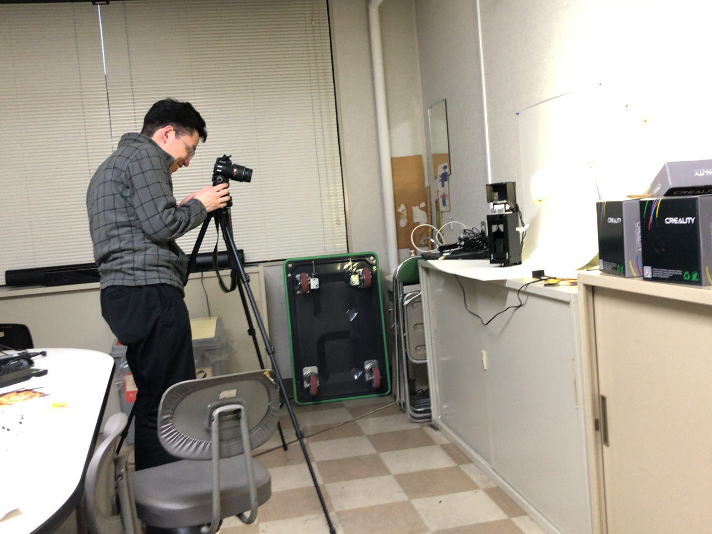
素直にオート |
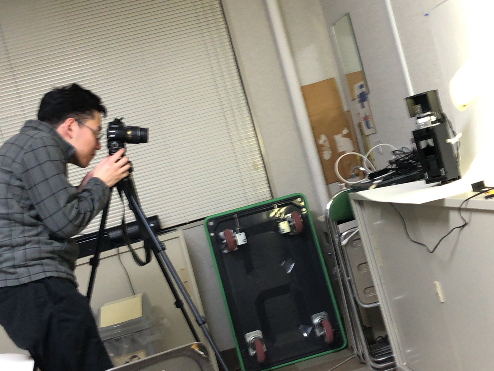
寄ったり離れたり | ||
|
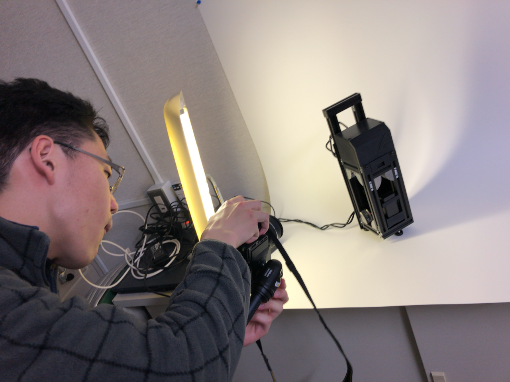
照明は大事 |
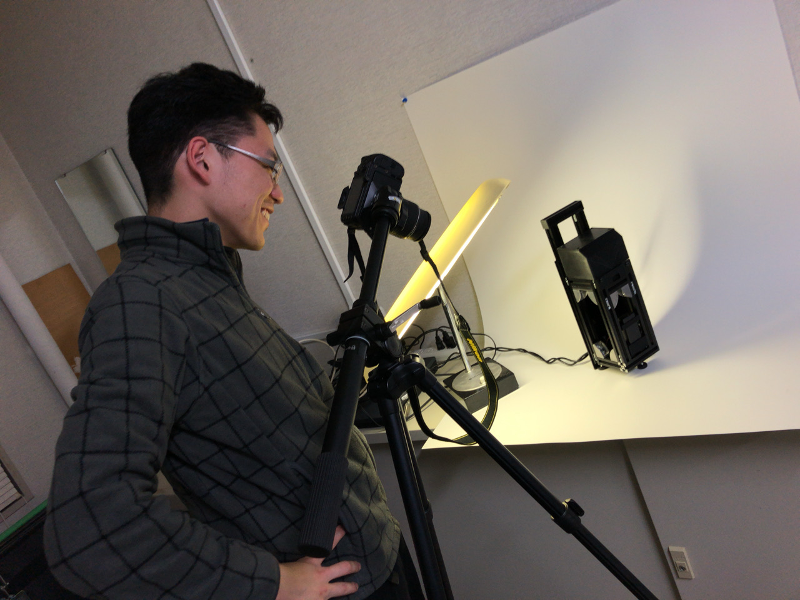
逆光は勝利 | ||